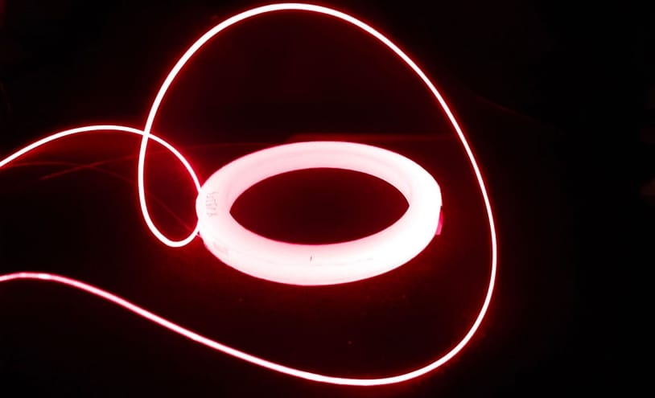

Szia, ez az én szuper jó oldalam.
Ordes
Szia, ez az én szuper jó oldalam.
Szia, ez az én szuper jó oldalam.
Ez egy bekezdés
Ez egy másik bekezdés
Tartalom
Fantasztikus hamburger
Rendelés lépései
- Válassz egy burgert
- Vedd meg
- Add meg a címedet
- Jó étvágyat
Cern-es kép oldala
Orders
